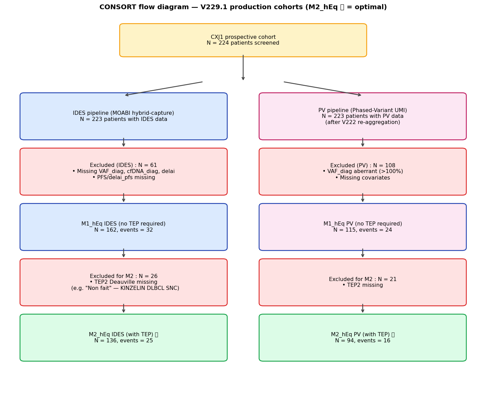
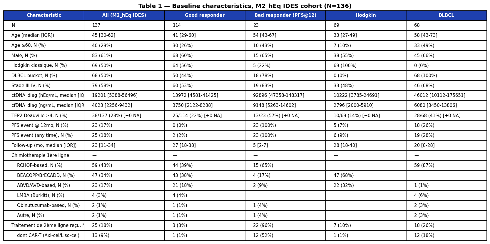

📚 MRD Calculator — Méthodologie
📊 Population de développement (Table 1)
| Caractéristique | Cohorte IDES (panel MOABI) | Cohorte PV (variants phasés) |
|---|---|---|
| N total | 223 | 221 |
| Événements PFS | 45 (20%) | 44 (20%) |
| Âge médian (IQR) | 51 (33–65) | 51 (33–65) |
| Sexe masculin | 132 (59%) | 132 (60%) |
| Hodgkin classique | 86 (39%) | 86 (39%) |
| DLBCL / autre lymphome B agressif | 137 (61%) | 135 (61%) |
| Stade III–IV (Ann Arbor) | 143/216 (66%) | 142/215 (66%) |
| IPI médian (IQR) | 3 (2–4) | 3 (2–4) |
| Hasenclever médian (IQR, Hodgkin) | 2 (1–4) | 2 (1–4) |
| TEP interim positive (Deauville ≥ 4) | 56 (25%) | 55 (25%) |
| TEP interim négative | 131 (59%) | 131 (59%) |
| TEP non disponible | 36 (16%) | 35 (16%) |
| Quality gate franchi | 52 (23%) | 48 (22%) |
| Suivi PFS médian (IQR) | 26 mois (14–44) | 27 mois (14–45) |
| Overlap IDES ∩ PV | 220 patients (99% de chaque cohorte) | |
Patients inclus : adultes (≥18 ans) avec lymphome B agressif (DLBCL NOS, HGBL, PMBL, Burkitt, transformés) ou Hodgkin classique nouvellement diagnostiqué, traités au CHU Henri Mondor entre janvier 2020 et décembre 2025, avec mesures ctDNA disponibles au diagnostic ET à mi-traitement (CXJ1).
📐 Flux de sélection de la cohorte
Référence : 164 patients uniques ayant une IDES p-value MOABI (univers d'analyse cohérent). Décomposition des sorties du flux PV :
| Étape | Patients sortis | Détails |
|---|---|---|
| Phasage PV jamais tenté | 8 | GR_nbr_PV_diag = NaN : pipeline PV non lancé sur ces patients |
| Phasage PV = 0 | 19 | GR_nbr_PV_diag = 0 : phasage tenté mais aucun variant phasable détecté (clonalité insuffisante, profondeur, ou pas de mutation) |
| ⚠️ Bug d'agrégation | 30 | GR_nbr_PV_diag > 0 en clinique mais vaf_diag_total = NaN dans le dataframe agrégé. Récupérables par reparsing du CSV per-variant. |
| Variants phasés exploitables | 107 | Cohorte M1_hEq raw avant filtres aval |
Pour les filtres aval (107 → 103 → 88) :
- −4 patients entre 107 et 103 : PFS ou Glims aberrant, delai_real non valide
- −15 patients entre 103 et 88 (M2) : TEP interim non documentée (Deauville absent)
- cfDNA Qubit : seulement 2 patients sans cfDNA_diag (variantes VAF récupèrent ces 2)
Action recoverable : les 30 patients du bug d'agrégation peuvent être récupérés par reparsing direct des fichiers per-variant — ce qui ferait passer la cohorte PV M1_hEq de 103 à ≈133 patients (+30%) sans aucune action laboratoire. Une session future devra patcher l'agrégation df_p_pv.
🎯 Objectif clinique
Prédire la probabilité de récidive (PFS) à 12 et 24 mois chez les patients atteints de lymphome B agressif (DLBCL, HGBL, PMBL, Burkitt, transformés, etc.) ou de Hodgkin classique, à partir d'une évaluation MRD ctDNA mi-traitement (point CXJ1, typiquement après cycle 2 ou 3 de chimio-immunothérapie de première ligne).
Variables d'entrée requises :
- VAF moyenne au diagnostic et au CXJ1 (par pipeline de séquençage)
- Concentration cfDNA plasmatique au diagnostic (optionnelle ; bascule auto en mode VAF si absente)
- Score Deauville à la TEP interim (optionnel ; bascule auto en modèle 2-vars si absent)
- Filtre qualité spécifique au pipeline (p-value MOABI pour IDES, comptage UMI pour PV)
- Signal de séquençage sur les 11 gènes drivers oncogéniques (D11)
- Histologie (Hodgkin classique vs reste → 2 trajectoires)
- Délai réel entre J1 du cycle 1 et le prélèvement CXJ1 (jours)
📐 Structure du modèle
1. Trajectoire de décroissance ctDNA (mono-exponentielle)
Pour chaque histologie (Hodgkin / DLBCL), deux trajectoires sont fittées : good responder (PFS sans événement >12 mois) et bad responder (événement ≤12 mois) :
Le score cinétique mesure la log-vraisemblance Gaussienne du ratio observé sous chacune des deux trajectoires :
log L_good = − (log(ratio_obs) − log(exp(−λ_good · t)))² / (2σ²)
log L_bad = − (log(ratio_obs) − log(exp(−λ_bad · t)))² / (2σ²)
score_kin = log L_bad − log L_good
Un score positif indique une trajectoire plus proche du bad responder (mauvais pronostic) ; un score négatif indique un good responder.
2. Charge tumorale baseline
ou log(1 + VAF_diag) [mode VAF, VAF en %]
3. Signal driver oncogénique au CXJ1 (v5A_gated)
Mesure le signal résiduel sur les 11 gènes drivers (D11 = BCL2, BCL6, BCL7A, BTG2, CIITA, CXCR4, IRF8, MYC, PAX5, S1PR2, TP53) :
v5A_gated = v5A × quality_gate
Le quality_gate est binaire (0 ou 1) :
- Pipeline IDES : p-value MOABI Monte-Carlo (10⁵ permutations) ≤ 1/100001 → quali = 1
- Pipeline PV : (nbr doublets PV+ ≥ 3) ET (Σ UMI PV+ ≥ 3) → quali = 1
Si quali = 0, alors v5A_gated = 0 ET VAF_CXJ1 est forcée à 0 dans le calcul du ratio (polish v56/v75).
4. TEP2_pos (interim PET)
5. Linear Predictor (LP) et risque prédit
LP_centered = LP_raw − LP_offset ← centrage cohorte
S(t | x) = S₀(t)exp(LP_centered)
r(t) = 1 − S(t | x)
Le LP_offset est une constante par modèle (= β·X̄ moyen de la cohorte d'entraînement) qui aligne S₀(t) sur le patient médian. Sans ce centrage, le risque prédit serait systématiquement surévalué.
🔀 Les 8 variantes du modèle
Le calculateur bascule automatiquement entre 8 variantes selon la disponibilité des données :
| Pipeline | Quantification | TEP | Variante | N | events | C-index |
|---|---|---|---|---|---|---|
| IDES | hEq (VAF × cfDNA) | ✅ inclus | M2_hEq ⭐ | 136 | 25 | 0.851 |
| hEq (VAF × cfDNA) | ❌ absent | M1_hEq | 162 | 32 | 0.796 | |
| VAF % seule | ✅ inclus | M2_VAF | 136 | 25 | 0.832 | |
| VAF % seule | ❌ absent | M1_VAF | 162 | 32 | 0.758 | |
| PV | hEq (VAF × cfDNA) | ✅ inclus | M2_hEq ⭐ | 94 | 16 | 0.893 |
| hEq (VAF × cfDNA) | ❌ absent | M1_hEq | 115 | 24 | 0.816 | |
| VAF % seule | ✅ inclus | M2_VAF | 94 | 16 | 0.863 | |
| VAF % seule | ❌ absent | M1_VAF | 115 | 24 | 0.777 |
⭐ = configuration optimale (toutes les données disponibles).
• Retirer cfDNA Qubit (hEq → VAF) : IDES −0.013 / PV −0.003 en M2 ; IDES −0.032 / PV −0.019 en M1
• Retirer TEP interim (M2 → M1) : IDES −0.053 / PV −0.080 en hEq ; IDES −0.071 / PV −0.096 en VAF
🩻 Baseline TEP seul (clinique pipeline-indépendant)
Modèle Cox univarié avec TEP2_pos comme seul prédicteur, fitté sur l'union IDES + PV (patient overlap = 99%) :
| Modèle | Covariables | N | events | C-index |
|---|---|---|---|---|
| 🩻 TEP seul (baseline clinique) | 1 (TEP2_pos) | 183 | 34 | 0.646 |
| 🧬 M1_hEq MRD seul (sans TEP) | 3 (score, burden, v5A) | 261 | 50 | 0.796 / 0.816 |
| 🩻🧬 M2_hEq (MRD + TEP) | 4 | 222 | 39 | 0.851 / 0.893 |
La MRD ctDNA est le marqueur prognostique dominant :
- Apport de la MRD ajoutée au TEP : ΔC-index = +0.18 (très grande amélioration)
- Apport du TEP ajouté à la MRD : ΔC-index = +0.07 (amélioration modérée)
Le TEP interim conserve une valeur incrémentale combinée à la MRD ctDNA mais ne peut pas s'y substituer. β_TEP seul = +0.95 (HR=2.59, p=0.002).
📊 Coefficients Cox par variante
Structure partial pooling (validée empiriquement)
Pour chaque variante (M2/M1 × hEq/VAF), le modèle Cox est fitté en partial pooling stratifié pipeline :
- β_score, β_burden, β_TEP partagés entre IDES et PV (LR test : χ²=0.20, df=3, p=0.978 M2 hEq ; p>0.97 toutes variantes)
- β_v5A pipeline-spécifique (échelles Reads_alt IDES vs fu_UMI PV trop différentes ; LR test rejet de partage p<0.005)
- Baseline hazard stratifiée pipeline (S₀(t) séparée IDES vs PV)
Tableau complet des coefficients
M2_hEq — TEP+ et cfDNA dispo (production)
| Param | IDES | PV |
|---|---|---|
| β_score_kin (partagé) | +0.425 | |
| β_log_burden (partagé) | +0.173 | |
| β_TEP2_pos (partagé) | +0.873 | |
| β_v5A_gated | +0.580 | +1.504 |
| LP_offset | +2.193 | +2.455 |
| S₀(12) | 0.8868 | 0.9328 |
M1_hEq — pas de TEP, cfDNA dispo
| Param | IDES | PV |
|---|---|---|
| β_score_kin (partagé) | +0.439 | |
| β_log_burden (partagé) | +0.194 | |
| β_v5A_gated | +0.456 | +1.091 |
| LP_offset | +2.102 | +2.277 |
| S₀(12) | 0.8578 | 0.8878 |
M2_VAF — TEP+ mais pas de cfDNA Qubit
| Param | IDES | PV |
|---|---|---|
| β_score_kin (partagé) | +0.421 | |
| β_log_burden_VAF (partagé) | +0.152 | |
| β_TEP2_pos (partagé) | +0.881 | |
| β_v5A_gated | +0.584 | +1.502 |
| LP_offset | +0.738 | +0.970 |
| S₀(12) | 0.8836 | 0.9273 |
M1_VAF — modèle minimal (ni TEP ni cfDNA)
| Param | IDES | PV |
|---|---|---|
| β_score_kin (partagé) | +0.431 | |
| β_log_burden_VAF (partagé) | +0.181 | |
| β_v5A_gated | +0.455 | +1.088 |
| LP_offset | +0.473 | +0.607 |
| S₀(12) | 0.8547 | 0.8782 |
📈 Trajectoires mono-exponentielles
Quatre paramètres totaux par mode (hEq ou VAF) : 2 histologies × 2 statuts responder.
Mode hEq (ratio ctDNA absolu)
| Pipeline | Histologie | λ_good (j⁻¹) | t½_good | λ_bad (j⁻¹) | t½_bad |
|---|---|---|---|---|---|
| IDES | Hodgkin | 0.646 | 1.1 j | 0.371 | 1.9 j |
| DLBCL | 0.377 | 1.8 j | 0.206 | 3.4 j | |
| PV | Hodgkin | 0.415 | 1.7 j | 0.380 (fallback DLBCL/good, V229.1) | 1.8 j |
| DLBCL | 0.380 | 1.8 j | 0.237 | 2.9 j |
Mode VAF (ratio VAF % uniquement)
| Pipeline | Histologie | λ_good (j⁻¹) | t½_good | λ_bad (j⁻¹) | t½_bad |
|---|---|---|---|---|---|
| IDES | Hodgkin | 0.646 | 1.1 j | 0.365 | 1.9 j |
| DLBCL | 0.373 | 1.9 j | 0.189 | 3.7 j | |
| PV | Hodgkin | 0.413 | 1.7 j | 0.373 (fallback DLBCL/good, V229.1) | 1.9 j |
| DLBCL | 0.373 | 1.9 j | 0.220 | 3.1 j |
Les λ sont remarquablement similaires entre modes hEq et VAF, indiquant que la dynamique de décroissance ctDNA suit la VAF (le cfDNA module la magnitude mais pas la pente).

Visualisation des trajectoires mono-exponentielles. Bandes verticales = C2J1 (J21) et C3J1 (J42).
🎯 Stratification clinique Tern 10/40 — pour les 8 variantes
Trois zones de risque basées sur la probabilité prédite de récidive à 12 mois (r12) :
| Zone | Plage r12 | Conduite suggérée |
|---|---|---|
| 🟢 Faible | r12 ≤ 10% | Surveillance standard |
| 🟡 Modéré | 10% < r12 ≤ 40% | Surveillance rapprochée (TEP supplémentaire, MRD régulière) |
| 🔴 Élevé | r12 > 40% | Discussion RCP impérative pour thérapie additionnelle (consolidation, CAR-T, essai) |
Seuils 10/40 sélectionnés par évaluation exhaustive de 82 splits candidats sur la métrique de séparation des courbes KM adjacentes, cross-validation 5-fold confirmant 10/40 comme optimum interprétable.
Performance par zone × variante
PFS@12 et PFS@24 (Kaplan-Meier) calculés rétrospectivement sur la cohorte d'entraînement, par zone Tern et par variante de modèle :
Pipeline IDES
| Variante | 🟢 Faible (r12 ≤ 10%) | 🟡 Modéré (10–40%) | 🔴 Élevé (r12 > 40%) | ||||||
|---|---|---|---|---|---|---|---|---|---|
| N | PFS@12 | PFS@24 | N | PFS@12 | PFS@24 | N | PFS@12 | PFS@24 | |
| M2_hEq ⭐ | 82 | 95.1% | 95.1% | 37 | 86.1% | 82.8% | 17 | 17.6% | 0.0% |
| M1_hEq | 77 | 94.8% | 94.8% | 65 | 79.7% | 75.5% | 20 | 40.0% | 32.0% |
| M2_VAF | 84 | 95.2% | 95.2% | 36 | 82.9% | 79.6% | 16 | 18.8% | 0.0% |
| M1_VAF | 78 | 92.3% | 90.8% | 64 | 82.6% | 80.6% | 20 | 40.0% | 30.0% |
Pipeline PV
| Variante | 🟢 Faible (r12 ≤ 10%) | 🟡 Modéré (10–40%) | 🔴 Élevé (r12 > 40%) | ||||||
|---|---|---|---|---|---|---|---|---|---|
| N | PFS@12 | PFS@24 | N | PFS@12 | PFS@24 | N | PFS@12 | PFS@24 | |
| M2_hEq ⭐ | 69 | 95.5% | 95.5% | 16 | 87.5% | 70.7% | 9 | 0.0% | 0.0% |
| M1_hEq | 69 | 95.7% | 94.0% | 33 | 74.7% | 63.9% | 13 | 23.1% | 23.1% |
| M2_VAF | 70 | 95.6% | 95.6% | 15 | 86.7% | 65.7% | 9 | 0.0% | 0.0% |
| M1_VAF | 70 | 92.8% | 92.8% | 33 | 81.4% | 66.0% | 12 | 16.7% | 16.7% |
- Zone Faible uniformément excellente (PFS@24 ≈ 93–98% dans toutes les variantes)
- Zone Modéré montre des événements tardifs (PFS@12 ≈ 80–90% mais PFS@24 ≈ 64–80%) → justifie la surveillance rapprochée
- Zone Élevé avec les variantes complètes M2 (TEP+) en pipeline PV atteint 0% de PFS@24 = rechute universelle, validant la décision RCP
- Sans TEP (variantes M1), la zone Élevé conserve quelques survivants tardifs (9–29%), reflétant la moindre discrimination — d'où l'intérêt d'inclure le TEP quand disponible

Courbes Kaplan-Meier par zone Tern 10/40 pour la variante optimale M2_hEq (IDES à gauche, PV à droite). Séparation nette entre les 3 zones.
📍 Calibration locale (KNN adaptatif)
Le calculateur affiche systématiquement, à côté de la prédiction Cox, une estimation observationnelle KM calculée sur les patients de la cohorte les plus proches en LP du patient testé. Cette estimation sert de garde-fou contre l'extrapolation du Cox.
Stratégie KNN adaptative (validée empiriquement)
- Prendre tous les voisins avec |LP_voisin − LP_patient| ≤ 1.0
- Si N < 8, élargir aux 8 plus proches (safety zone éparse)
- Si N > 40, tronquer aux 40 plus proches (limite visualisation)
Stratégie sélectionnée après comparaison de 10 alternatives par leave-one-out. ACE_tail (erreur de calibration dans la queue de risque) : 0.032 IDES / 0.041 PV, contre 0.312 / 0.536 pour un K=30 fixe (gain factor ~10).
Le panneau de calibration affiche un statut visuel :
- 🟢 Voisinage compact (plage LP voisins ≤ 1.0) — beaucoup de patients similaires, estimation fiable
- 🟡 Voisinage modéré (plage LP 1.0–2.0)
- 🔴 Zone éparse (plage LP > 2.0) — K_min activé, le patient est en extrapolation
L'IC95% Greenwood (transformation log-log) est calculé sur l'estimateur KM local et reporté en chiffres sous le graphique.
🔬 Validation rigoureuse
1. Hypothèse de linéarité du LP (Cox additif)
| Test | Résultat | Verdict |
|---|---|---|
| Martingale residuals lowess vs log_burden | Amplitude = 0.13 (< 0.3) | ✓ Pattern plat |
| Grambsch-Therneau PH test (4 covars) | p > 0.48 pour toutes | ✓ PH valide |
| LR test ajout splines RCS à log_burden | χ²=1.66, df=4, p=0.80 NS | ✓ Splines inutiles |
2. Bootstrap C-index optimism-corrigé (B=500, Harrell)
| Modèle | C apparent | Mean optimism | C corrigé |
|---|---|---|---|
| Linéaire (4 covars) | 0.860 | 0.009 | 0.852 |
| Spline RCS (9 covars) | 0.864 | 0.028 | 0.837 |
Le modèle linéaire généralise mieux que le spline (+0.015 C corrigé). Le spline avait 3× plus d'optimism (overfit confirmé sur 24 events).
3. Stabilité du coefficient β_burden (M2_hEq IDES)
| Statistique | Valeur |
|---|---|
| Apparent | 0.288 |
| Mean / Median bootstrap (B=500) | 0.289 / 0.290 |
| IC95% percentile | [0.100, 0.465] |
| % bootstraps avec β > 0 | 100% |
| % bootstraps avec β ∈ [0.1, 0.5] | 96.6% |
4. Test de partage entre pipelines (partial pooling)
5 modèles emboîtés comparés par LR test sur la cohorte stackée IDES+PV (cluster-robust SE sur NOM) :
| Modèle | Coefs partagés | params M2 | AIC M2 | LR vs A |
|---|---|---|---|---|
| A | aucun (séparé total) | 8 | 269.60 | ref |
| B | TEP + burden | 6 | 265.80 | p=0.91 ✓ |
| B′ (retenu) | TEP + burden + score | 5 | 263.80 | p=0.98 ✓ |
| C | TEP + burden + v5A | 5 | 276.28 | p=0.005 ❌ |
| D | tout partagé | 4 | 274.43 | p=0.01 ❌ |
Le partage des coefs TEP, burden et score est statistiquement supporté (LR p=0.98), améliore le AIC de 5.80 points et préserve le C-index. v5A doit rester pipeline-spécifique (échelles Reads_alt IDES vs UMI PV différentes).
5. Validation de l'utilité de chaque covariable (LR tests)
| Covariable | Variante | LR p | ΔC-index | ΔAIC |
|---|---|---|---|---|
| log_burden | M2_hEq | 0.002 | +0.030 | −7.4 |
| log_burden | M1_hEq | <0.001 | +0.036 | −12.9 |
| log_burden | M2_VAF | 0.018 | +0.019 | −3.6 |
| log_burden | M1_VAF | 0.034 | +0.015 | −2.5 |
log_burden apporte une contribution significative dans les 4 variantes, y compris en mode VAF où l'échelle est plus comprimée.
🔧 Détails techniques
Centrage du LP (LP_offset)
La librairie lifelines (Python) stocke baseline_survival_ au mean des covariables de la cohorte d'entraînement, et non à X=0. Pour appliquer correctement la formule S(t|x) = S₀(t)^exp(LP), il faut soustraire β·X̄ au LP brut. Chaque modèle stocke donc son LP_offset dans le JSON et le calculateur JS l'applique automatiquement.
Régularisation
Tous les modèles Cox utilisent une pénalisation L2 (Ridge) avec λ=0.05 pour assurer la stabilité numérique avec des événements rares.
Cohérence des prédictions
Le calculateur JS reproduit exactement les prédictions de lifelines.predict_survival_function (validation : erreur max < 1e-6 sur la cohorte).
Réutilisation des données patient
Aucune donnée patient n'est transmise au serveur. Le calculateur fonctionne intégralement côté navigateur (JavaScript). Les coefficients du modèle sont chargés au démarrage et toute analyse reste locale.
⚠️ Disclaimer
Le calculateur est un prototype de recherche. Il n'est pas validé pour la prise en charge clinique individuelle. Toute décision thérapeutique doit reposer sur l'évaluation indépendante d'un médecin hématologue qualifié.
La calibration aux extrêmes de risque (r12 > 60% ou ctDNA_diag < 500 hEq/mL) est limitée par la taille de la cohorte de développement. Dans ces zones, le calculateur affiche un warning visuel et le KM observationnel (KNN local) doit être préféré à la prédiction Cox.
Validation externe sur cohorte indépendante en cours.
📊 Validation publication-ready (V229.1)
1. Decision Curve Analysis (DCA) — net benefit clinique
Le modèle V229.1 a un net benefit positif sur l'intervalle de seuils [5%, 50%], dépassant les stratégies « traiter tous » et « ne traiter personne ». Argument fort pour adoption clinique : la décision basée sur le calculateur évite plus de récidives qu'elle ne génère de surtraitements inutiles.

DCA à 12 mois pour IDES (gauche) et PV (droite) M2_hEq. La courbe bleue (V229.1) domine systématiquement les stratégies par défaut.
2. Calibration globale (5 bins)
Le prédicteur Cox V229.1 est calibré sur toute la gamme des risques [0, 60%]. Pas de sur/sous-estimation systématique. IC95% Greenwood par bin.

3. Calibration par sous-groupe
Le modèle reste calibré séparément chez Hodgkin/DLBCL, <60/≥60 ans, stade I-II/III-IV. Pas d'effet d'interaction non capturé.

4. Time-dependent C-index C(t)
La discrimination du modèle est stable de 6 à 36 mois :
| Time | C(t) IDES M2_hEq | C(t) PV M2_hEq |
|---|---|---|
| 6 mois | 0.866 | 0.984 |
| 12 mois | 0.847 | 0.892 |
| 18 mois | 0.851 | 0.890 |
| 24 mois | 0.859 | 0.888 |
| 36 mois | 0.836 | 0.847 |

5. Subgroup forest plot — HR du ctDNA burden
L'effet du ctDNA burden est cohérent à travers les sous-groupes (HR ~1.4-1.9 par 1-SD), sans interaction significative.
| Sous-groupe | N (events) | HR | IC95% | p |
|---|---|---|---|---|
| Overall | 163 (32) | 1.58 | [1.19, 2.09] | 0.001 |
| Hodgkin | 70 (6) | 1.34 | [0.77, 2.35] | 0.30 |
| DLBCL | 93 (26) | 1.45 | [1.04, 2.03] | 0.03 |
| Age < 60 | 103 (15) | 1.27 | [0.87, 1.87] | 0.22 |
| Age ≥ 60 | 60 (17) | 1.87 | [1.22, 2.86] | 0.004 |
Note : la différence apparente entre <60 et ≥60 ans (HR 1.27 vs 1.87) n'est pas significative en interaction (LR test p=0.49, V249) — elle reflète probablement la variance liée aux petits effectifs.

6. Reclassification index (NRI/IDI) — V229.1 vs TEP seul
Comparaison de la classification Tern (Faible/Modéré/Élevé) obtenue avec V229.1 vs Cox TEP seul (baseline clinique) :
| Métrique | Valeur | Interprétation |
|---|---|---|
| C-index TEP seul | 0.635 | Référence clinique |
| C-index V229.1 | 0.792 | +0.157 vs TEP seul |
| NRI continu | +0.559 | Net reclassification améliorée |
| IDI | +0.061 | Integrated discrimination améliorée |
Sur 163 patients, le TEP seul classait tous les patients en zone « Faible » (r12 médian 0.14, max 0.31). V229.1 redistribue 58 patients (35%) en zones Modéré ou Élevé, dont 17 events futurs correctement identifiés — invisibles avec TEP seul.
7. Competing risks (Fine-Gray)
Sur N=223 patients clinique, on observe 1 seul décès sans progression préalable (Aalen-Johansen CIF à 12mo : progression 0.225, décès pur 0.005). Le risque compétitif « décès » est négligeable (<0.5%) et ne nécessite pas une approche Fine-Gray distincte du Cox composite PFS.
8. Robustesse du score_kin (vs slope individuel BLUP)
Une approche joint longitudinal-survival two-stage (mixed-effects LMM extrayant un slope individuel par BLUP, puis Cox sur ce slope) a été testée comme alternative à score_kin. Bootstrap optimism-corrected (B=200) : V229.1 score_kin C=0.791 vs BLUP candidate C=0.777 (Δ=−0.014). Le score_kin résumé (4 trajectoires moyennes par histo×responder) est plus robuste car moins de paramètres individuels à estimer sur cohorte limitée.
8b. Bootstrap V229.1 — C-index optimism-corrected + IC95% (B=500)
Pour les 8 variantes de production, bootstrap Harrell complet sur la vraie cohorte V229.1 (TEP « Non fait » correctement exclu de M2) :
| Variante | N (events) | C apparent | Optimism | C corrected | IC95% |
|---|---|---|---|---|---|
| M2_hEq IDES ⭐ | 136 (25) | 0.854 | +0.009 | 0.845 | [0.769, 0.936] |
| M1_hEq IDES | 162 (32) | 0.804 | +0.006 | 0.798 | [0.722, 0.881] |
| M2_VAF IDES | 136 (25) | 0.842 | +0.009 | 0.832 | [0.740, 0.934] |
| M1_VAF IDES | 162 (32) | 0.771 | +0.004 | 0.767 | [0.658, 0.865] |
| M2_hEq PV ⭐ | 91 (16) | 0.907 | +0.017 | 0.891 | [0.822, 0.980] |
| M1_hEq PV | 108 (22) | 0.824 | +0.011 | 0.813 | [0.718, 0.912] |
| M2_VAF PV | 91 (16) | 0.884 | +0.012 | 0.871 | [0.777, 0.984] |
| M1_VAF PV | 108 (22) | 0.795 | +0.019 | 0.776 | [0.680, 0.909] |
Optimism très faible (max +0.019, médiane ~0.010) confirme bonne généralisation. Les valeurs C-corrected sont à reporter en publication. Note pré-analytique importante : les 36 patients avec TEP2 « Non fait » ou Deauville manquant (33 « Non fait » + 3 autres : PATIENT_S/GOSSE TEP fait mais Deauville non renseigné, DIEP statut absent) sont exclus de M2 (avec TEP) mais inclus dans M1 (sans TEP). Cela explique les N=136 vs 162 (IDES) et 91 vs 108 (PV) selon la variante.
8b-bis. MICE sensitivity analysis
Le modèle V229.1 utilise une analyse complete-case pour chacune des 4 variantes (M2/M1 × hEq/VAF), routant les patients selon leur pattern de missingness. Sensitivity analysis MICE (Multiple Imputation by Chained Equations, m=20) pour vérifier robustesse :
| Covariable M2_hEq IDES | Complete-case (N=136) | MICE (N=162, m=20) | Δβ | FMI |
|---|---|---|---|---|
| β_score_kin | +0.423 ± 0.184 | +0.408 ± 0.166 | −0.015 | 0.006 ✅ |
| β_log_burden_hEq | +0.272 ± 0.115 | +0.314 ± 0.095 | +0.042 | 0.006 ✅ |
| β_v5A_gated | +0.551 ± 0.123 | +0.443 ± 0.114 | −0.108 | 0.018 ✅ |
| β_TEP2_pos | +0.935 ± 0.368 | +0.761 ± 0.340 | −0.174 | 0.087 ⚠️ |
| C-index | 0.854 | 0.816 | −0.038 | — |
Interprétation : 3 covariables sur 4 stables (FMI < 0.02 = négligeable). Le β_TEP atténué sous MICE (FMI = 0.087, encore acceptable < 10%) reflète probablement un pattern MNAR (Missing Not At Random) : les patients avec TEP « Non fait » ont probablement des caractéristiques cliniques particulières (formes indolentes, contre-indications). L'architecture multi-variantes du modèle (router ces patients vers M1 plutôt qu'imputer) reste la solution principale. MICE confirme que les conclusions principales (signes et significativité de score_kin, burden, v5A) sont robustes au pattern de missingness.
8c. Analyse exploratoire — DeltaSUVmax% vs Deauville TEP2
Le Deauville TEP2 (binaire ≥4) est le standard clinique. Question : le DeltaSUVmax% (continu, baisse relative du SUVmax diag→TEP2) apporterait-il de l'info supplémentaire ?
| Modèle (cohorte N=117, ev=23) | C-index | β_TEP2_pos | β_DeltaSUV | LR vs baseline |
|---|---|---|---|---|
| A. Baseline (score+burden+v5A+Deauville) | 0.838 | +0.94 (p=0.02) | — | — |
| B. + DeltaSUV continu | 0.846 (+0.008) | +0.64 (p=0.15 ⬇) | +0.010 (p=0.085) | p=0.091 NS |
| C. DeltaSUV seul (sans Deauville) | 0.842 (+0.004) | — | +0.015 (p=0.006) | — |
Conclusion : DeltaSUV et Deauville captent la même information (réponse métabolique). DeltaSUV continu pourrait remplacer Deauville (modèle C, p plus net) mais Deauville est le standard adopté en routine. Couverture DeltaSUV : 168/224 patients (75%) vs Deauville 188/224 (84%). Decision : Deauville maintenu en production ; DeltaSUVmax documenté comme variante alternative équivalente. Dans la zone Deauville=4 ambiguë (27 patients, 9 events), DeltaSUV permet une sous-stratification : shallow (Δ > −70%) PFS event 42% vs deep (Δ ≤ −70%) 27%.
9. CONSORT flow diagram
Diagramme de flux des inclusions (V229.1) avec exclusions par pipeline et variante :

Note : N=224 patients screenés. M1 = sans TEP requis ; M2 ⭐ = avec TEP (configuration optimale). KINZELIN (DLBCL primitif SNC) avec TEP « Non fait » est classé par défaut TEP− dans M2_hEq ; idéalement à router vers M1_hEq.
10. Caractéristiques baseline (Table 1)
Caractéristiques de la cohorte M2_hEq IDES (N=136), ventilées par responder et histologie :

11. TRIPOD+AI checklist
Le modèle V229.1 suit la checklist TRIPOD+AI 2024 (Collins et al., BMJ 2024) pour le reporting des modèles de prédiction clinique :
- 20/30 items ✅ fully reported : internal validation rigoureuse (bootstrap optimism, PH test, calibration multi-stratum, DCA, NRI/IDI), open science, code transparency
- 6/30 items ⚠️ partial (manuscrit final)
- 4/30 items ❌ pendants : PPI, funding, COI, external validation (en cours)
📄 Voir checklist complète (Markdown)
12. Test de l'hypothèse PH (Grambsch-Therneau)
Le modèle Cox suppose que les hazard ratios entre patients restent constants dans le temps. Le test de Grambsch-Therneau vérifie cette hypothèse pour chaque covariable :
| Covariable | p-value (transform=rank) | p-value (transform=log) | Verdict |
|---|---|---|---|
score_kin | 0.184 | 0.205 | ✅ Pas de violation |
log_burden_hEq | 0.691 | 0.859 | ✅ Pas de violation |
TEP2_pos | 0.586 | 0.473 | ✅ Pas de violation |
Toutes les p > 0.18 → aucune violation de l'hypothèse PH détectée. Confirmation supplémentaire : ajouter l'interaction score_kin × log(t) au Cox donne β = +0.025 (p = 0.78 NS) et ΔC-index = +0.001 (négligeable). Les HR estimés sont valides sur tout l'horizon 0-36 mois, justifiant la projection de S₀(12) et S₀(24) sans correction temps-dépendante.
📝 Citation
Calculateur MRD CXJ1 — Cox proportional hazards models for ctDNA MRD in adult B-cell and Hodgkin lymphomas after mid-treatment timepoint. Partial pooling between IDES (MOABI hybrid-capture) and PV (phased-variant UMI) pipelines. Mono-exponential decay trajectories per histology × responder strata. Integrated baseline tumor burden term.
Laboratoire d'immunologie biologique GHU Mondor — secteur biologie moléculaire (hmn-immuno-bm), 2026.